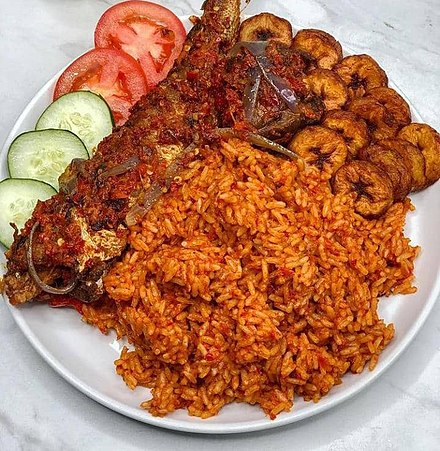

Jollof Rice

The origins of jollof rice can be traced to the Senegambian region that was ruled by the Wolof or Jolof Empire in the 14th century, spanning parts of today's Senegal, The Gambia and Mauritania, where rice was grown. The dish has its roots in a traditional dish called thieboudienne, containing rice, fish, shellfish and vegetables.[3] Food and agriculture historian James C. McCann considers this claim plausible given the popularity of rice in the upper Niger valley, but considers it unlikely that the dish could have spread from Senegal to its current range since such a diffusion is not seen in "linguistic, historical or political patterns". Instead he proposes that the dish spread with the Mali empire, especially the Djula tradespeople who dispersed widely to the regional commercial and urban centers, taking with them economic arts of "blacksmithing, small-scale marketing, and rice agronomy" as well as the religion of Islam.[2] Marc Dufumier, an emeritus professor of agronomy, proposes a more recent origin for the dish, which may only have appeared as a consequence of the colonial promotion of intensive peanut cropping in central Senegal for the French oil industry, and where commensurate reduction in the planted area of traditional millet and sorghum staples was compensated by forced imports of broken rice from Southeast Asia.[4] It may then have spread throughout the region through the historical commercial, cultural and religious channels linking Senegal with Ghana, Nigeria and beyond, many of which continue to thrive today, such as the Tijāniyyah Sufi brotherhood bringing thousands of West African pilgrims to Senegal annually.
Although considerable variation exists, the basic profile for Nigerian jollof rice includes long-grain parboiled rice, tomatoes and tomato paste, pepper, vegetable oil, onions, and stock cubes. Most of the ingredients are cooked in one pot, of which a rich meat stock and a fried tomato and pepper puree characteristically forms the base. Rice is then added and left to cook in the liquid. The dish is then served with the protein of choice and very often with fried plantains, moi moi, steamed vegetables, coleslaw, salad, etc.[16] In the riverine areas of Nigeria where seafood is the main source of protein, seafood often takes the place of chicken or meat as the protein of choice.
|  |
Jollof rice traditionally consists of rice, cooking oil,
vegetables such as tomato, onion, red pepper, garlic, ginger and
Scotch bonnet chilli peppers. To enhance the colour of the dish,
tomato paste (purée) is added.
|